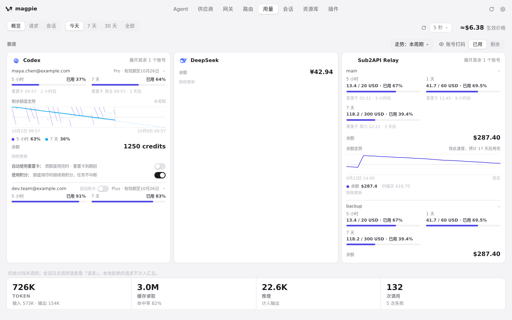
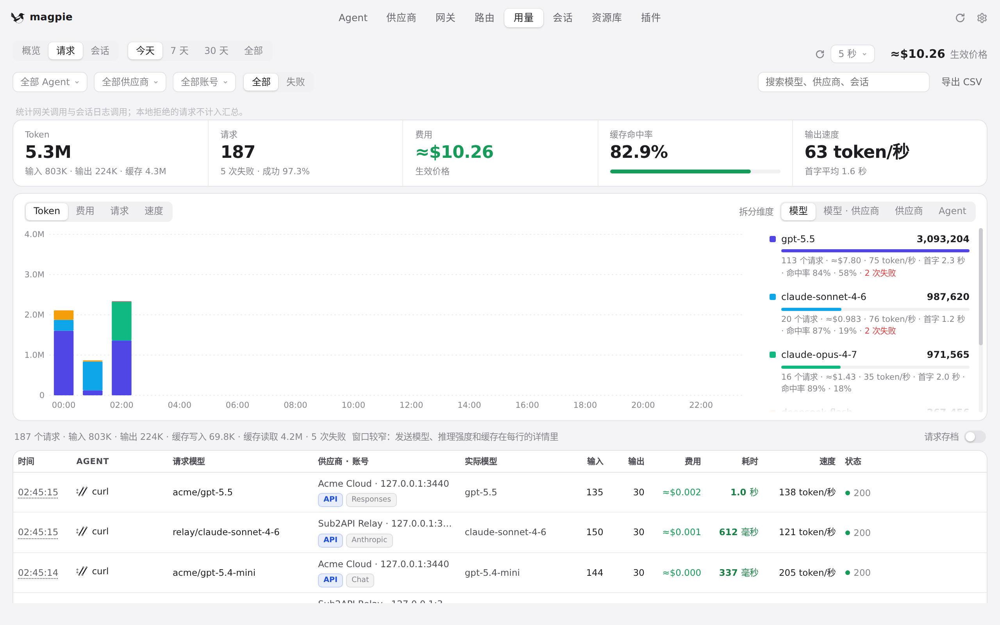
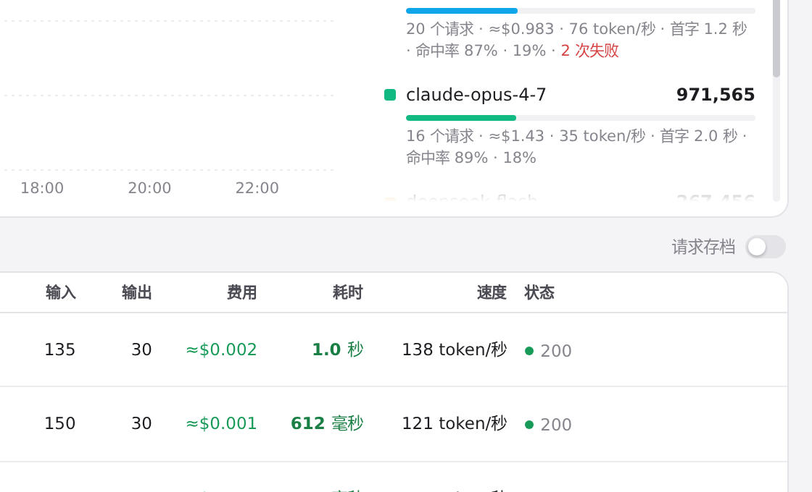

#1017 界面预览
commit d648a17 · 回到 PR · 打开 Usage 页（直接进入、刷新或从链接进来）时，show("usage")/load() 现在会同时加载 providers 状态，于是「请求」栏右上角由 renderArchive 画的请求存档开关不再因为 providers 为空而在这一页的所有 tab 上隐藏。
红线是鼠标走过的轨迹，红色圆环是一次点击；底部文字是这一步在做什么。空格暂停，← → 逐段查看。

直接打开 Usage 页时的请求存档开关 · 直接开在 Usage 页：概览与「概览 / 请求 / 会话」三个页签

直接打开 Usage 页时的请求存档开关 · 「请求」页签：请求列表与它的合计

直接打开 Usage 页时的请求存档开关 · 「请求」栏右上角这条线上的请求存档开关